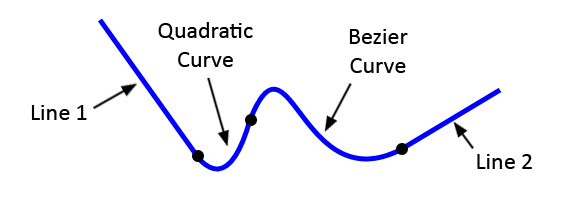

Ścieżki
Ścieżka
Aby utworzyć ścieżkę, łączymy wiele podścieżek. Punkt końcowy każdej nowej podścieżki staje się nowym punktem kontekstu. Możemy użyć metod lineTo(), arcTo(), quadraticCurveTo() i bezierCurveTo() do skonstruowania każdej podścieżki, która tworzy naszą ścieżkę. Możemy również użyć metody beginPath() za każdym razem, gdy chcemy rozpocząć rysowanie nowej ścieżki.

<canvas id="firstCanvas" width="300px" height="300px"></canvas>canvas {
border: 3px solid black;
}const canvas = document.getElementById("firstCanvas");
const ctx = canvas.getContext("2d");
ctx.beginPath();
ctx.moveTo(30, 30);
ctx.lineTo(90, 150);
ctx.quadraticCurveTo(120, 30, 150, 150);
ctx.bezierCurveTo(210, 180, 240, 210, 150, 240);
ctx.lineWidth = 10;
ctx.stroke();
Połączenia linii
Aby zmienić styl łączenia linii w ścieżce, ustawiamy właściwość kontekstu lineJoin na jedną z trzech wartości: miter (domyślny), round lub bevel.
<canvas id="secondCanvas" width="300px" height="300px"></canvas>canvas {
border: 3px solid black;
}const canvas = document.getElementById("secondCanvas");
const ctx = secondCanvas.getContext("2d");
ctx.beginPath();
ctx.moveTo(60, 240);
ctx.lineTo(120, 90);
ctx.lineTo(150, 240);
ctx.lineTo(210, 90);
ctx.lineTo(240, 240);
ctx.lineJoin = "round";
ctx.lineWidth = 25;
ctx.strokeStyle = "black";
ctx.stroke();